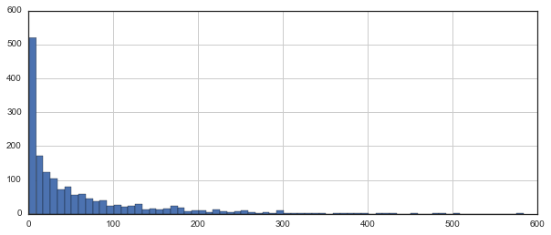
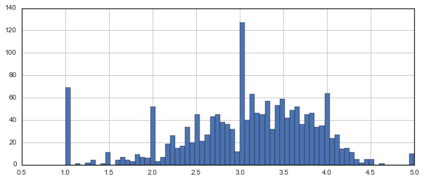
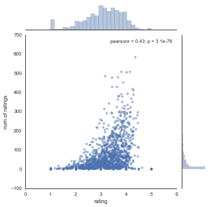

Recommender Systems Basics Recommending Films
In this basic project, we will focus on providing a basic recommendation system by suggesting items that are most similar to a particular item, in this case, films. Keep in mind, this is not a true robust recommendation system, to describe it more accurately,it just tells you what movies/items are most similar to your movie choice.
Let’s get started!
Import Libraries
import numpy as np
import pandas as pdGet the Data
column_names = ['user_id', 'item_id', 'rating', 'timestamp']
df = pd.read_csv('u.data', sep='\t', names=column_names)df.head()| user_id | item_id | rating | timestamp | |
|---|---|---|---|---|
| 0 | 0 | 50 | 5 | 881250949 |
| 1 | 0 | 172 | 5 | 881250949 |
| 2 | 0 | 133 | 1 | 881250949 |
| 3 | 196 | 242 | 3 | 881250949 |
| 4 | 186 | 302 | 3 | 891717742 |
Now let’s get the movie titles:
movie_titles = pd.read_csv("Movie_Id_Titles")
movie_titles.head()| item_id | title | |
|---|---|---|
| 0 | 1 | Toy Story (1995) |
| 1 | 2 | GoldenEye (1995) |
| 2 | 3 | Four Rooms (1995) |
| 3 | 4 | Get Shorty (1995) |
| 4 | 5 | Copycat (1995) |
We can merge them together:
df = pd.merge(df,movie_titles,on='item_id')
df.head()| user_id | item_id | rating | timestamp | title | |
|---|---|---|---|---|---|
| 0 | 0 | 50 | 5 | 881250949 | Star Wars (1977) |
| 1 | 290 | 50 | 5 | 880473582 | Star Wars (1977) |
| 2 | 79 | 50 | 4 | 891271545 | Star Wars (1977) |
| 3 | 2 | 50 | 5 | 888552084 | Star Wars (1977) |
| 4 | 8 | 50 | 5 | 879362124 | Star Wars (1977) |
EDA
Let’s explore the data a bit and get a look at some of the best rated movies.
Visualization Imports
import matplotlib.pyplot as plt
import seaborn as sns
sns.set_style('white')
%matplotlib inlineLet’s create a ratings dataframe with average rating and number of ratings:
df.groupby('title')['rating'].mean().sort_values(ascending=False).head()title
Marlene Dietrich: Shadow and Light (1996) 5.0
Prefontaine (1997) 5.0
Santa with Muscles (1996) 5.0
Star Kid (1997) 5.0
Someone Else's America (1995) 5.0
Name: rating, dtype: float64
df.groupby('title')['rating'].count().sort_values(ascending=False).head()title
Star Wars (1977) 584
Contact (1997) 509
Fargo (1996) 508
Return of the Jedi (1983) 507
Liar Liar (1997) 485
Name: rating, dtype: int64
ratings = pd.DataFrame(df.groupby('title')['rating'].mean())
ratings.head()| rating | |
|---|---|
| title | |
| 'Til There Was You (1997) | 2.333333 |
| 1-900 (1994) | 2.600000 |
| 101 Dalmatians (1996) | 2.908257 |
| 12 Angry Men (1957) | 4.344000 |
| 187 (1997) | 3.024390 |
Now set the number of ratings column:
ratings['num of ratings'] = pd.DataFrame(df.groupby('title')['rating'].count())
ratings.head()| rating | num of ratings | |
|---|---|---|
| title | ||
| 'Til There Was You (1997) | 2.333333 | 9 |
| 1-900 (1994) | 2.600000 | 5 |
| 101 Dalmatians (1996) | 2.908257 | 109 |
| 12 Angry Men (1957) | 4.344000 | 125 |
| 187 (1997) | 3.024390 | 41 |
Now a few histograms:
plt.figure(figsize=(10,4))
ratings['num of ratings'].hist(bins=70)<matplotlib.axes._subplots.AxesSubplot at 0x1258f8780>

plt.figure(figsize=(10,4))
ratings['rating'].hist(bins=70)<matplotlib.axes._subplots.AxesSubplot at 0x125d12908>

sns.jointplot(x='rating',y='num of ratings',data=ratings,alpha=0.5)<seaborn.axisgrid.JointGrid at 0x126005320>

Okay! Now that we have a general idea of what the data looks like, let’s move on to creating a simple recommendation system:
Recommending Similar Movies
Now let’s create a matrix that has the user ids on one access and the movie title on another axis. Each cell will then consist of the rating the user gave to that movie. Note there will be a lot of NaN values, because most people have not seen most of the movies.
moviemat = df.pivot_table(index='user_id',columns='title',values='rating')
moviemat.head()| title | 'Til There Was You (1997) | 1-900 (1994) | 101 Dalmatians (1996) | 12 Angry Men (1957) | 187 (1997) | 2 Days in the Valley (1996) | 20,000 Leagues Under the Sea (1954) | 2001: A Space Odyssey (1968) | 3 Ninjas: High Noon At Mega Mountain (1998) | 39 Steps, The (1935) | ... | Yankee Zulu (1994) | Year of the Horse (1997) | You So Crazy (1994) | Young Frankenstein (1974) | Young Guns (1988) | Young Guns II (1990) | Young Poisoner's Handbook, The (1995) | Zeus and Roxanne (1997) | unknown | Á köldum klaka (Cold Fever) (1994) |
|---|---|---|---|---|---|---|---|---|---|---|---|---|---|---|---|---|---|---|---|---|---|
| user_id | |||||||||||||||||||||
| 0 | NaN | NaN | NaN | NaN | NaN | NaN | NaN | NaN | NaN | NaN | ... | NaN | NaN | NaN | NaN | NaN | NaN | NaN | NaN | NaN | NaN |
| 1 | NaN | NaN | 2.0 | 5.0 | NaN | NaN | 3.0 | 4.0 | NaN | NaN | ... | NaN | NaN | NaN | 5.0 | 3.0 | NaN | NaN | NaN | 4.0 | NaN |
| 2 | NaN | NaN | NaN | NaN | NaN | NaN | NaN | NaN | 1.0 | NaN | ... | NaN | NaN | NaN | NaN | NaN | NaN | NaN | NaN | NaN | NaN |
| 3 | NaN | NaN | NaN | NaN | 2.0 | NaN | NaN | NaN | NaN | NaN | ... | NaN | NaN | NaN | NaN | NaN | NaN | NaN | NaN | NaN | NaN |
| 4 | NaN | NaN | NaN | NaN | NaN | NaN | NaN | NaN | NaN | NaN | ... | NaN | NaN | NaN | NaN | NaN | NaN | NaN | NaN | NaN | NaN |
5 rows × 1664 columns
Most rated movie:
ratings.sort_values('num of ratings',ascending=False).head(10)| rating | num of ratings | |
|---|---|---|
| title | ||
| Star Wars (1977) | 4.359589 | 584 |
| Contact (1997) | 3.803536 | 509 |
| Fargo (1996) | 4.155512 | 508 |
| Return of the Jedi (1983) | 4.007890 | 507 |
| Liar Liar (1997) | 3.156701 | 485 |
| English Patient, The (1996) | 3.656965 | 481 |
| Scream (1996) | 3.441423 | 478 |
| Toy Story (1995) | 3.878319 | 452 |
| Air Force One (1997) | 3.631090 | 431 |
| Independence Day (ID4) (1996) | 3.438228 | 429 |
Let’s choose two movies: starwars, a sci-fi movie. And Liar Liar, a comedy.
ratings.head()| rating | num of ratings | |
|---|---|---|
| title | ||
| 'Til There Was You (1997) | 2.333333 | 9 |
| 1-900 (1994) | 2.600000 | 5 |
| 101 Dalmatians (1996) | 2.908257 | 109 |
| 12 Angry Men (1957) | 4.344000 | 125 |
| 187 (1997) | 3.024390 | 41 |
Now let’s grab the user ratings for those two movies:
starwars_user_ratings = moviemat['Star Wars (1977)']
liarliar_user_ratings = moviemat['Liar Liar (1997)']
starwars_user_ratings.head()user_id
0 5.0
1 5.0
2 5.0
3 NaN
4 5.0
Name: Star Wars (1977), dtype: float64
We can then use corrwith() method to get correlations between two pandas series:
similar_to_starwars = moviemat.corrwith(starwars_user_ratings)
similar_to_liarliar = moviemat.corrwith(liarliar_user_ratings)/Users/marci/anaconda/lib/python3.5/site-packages/numpy/lib/function_base.py:2487: RuntimeWarning: Degrees of freedom <= 0 for slice
warnings.warn("Degrees of freedom <= 0 for slice", RuntimeWarning)
Let’s clean this by removing NaN values and using a DataFrame instead of a series:
corr_starwars = pd.DataFrame(similar_to_starwars,columns=['Correlation'])
corr_starwars.dropna(inplace=True)
corr_starwars.head()| Correlation | |
|---|---|
| title | |
| 'Til There Was You (1997) | 0.872872 |
| 1-900 (1994) | -0.645497 |
| 101 Dalmatians (1996) | 0.211132 |
| 12 Angry Men (1957) | 0.184289 |
| 187 (1997) | 0.027398 |
Now if we sort the dataframe by correlation, we should get the most similar movies, however note that we get some results that don’t really make sense. This is because there are a lot of movies only watched once by users who also watched star wars (it was the most popular movie).
corr_starwars.sort_values('Correlation',ascending=False).head(10)| Correlation | |
|---|---|
| title | |
| Commandments (1997) | 1.0 |
| Cosi (1996) | 1.0 |
| No Escape (1994) | 1.0 |
| Stripes (1981) | 1.0 |
| Man of the Year (1995) | 1.0 |
| Hollow Reed (1996) | 1.0 |
| Beans of Egypt, Maine, The (1994) | 1.0 |
| Good Man in Africa, A (1994) | 1.0 |
| Old Lady Who Walked in the Sea, The (Vieille qui marchait dans la mer, La) (1991) | 1.0 |
| Outlaw, The (1943) | 1.0 |
Let’s fix this by filtering out movies that have less than 100 reviews (this value was chosen based off the histogram from earlier).
corr_starwars = corr_starwars.join(ratings['num of ratings'])
corr_starwars.head()| Correlation | num of ratings | |
|---|---|---|
| title | ||
| 'Til There Was You (1997) | 0.872872 | 9 |
| 1-900 (1994) | -0.645497 | 5 |
| 101 Dalmatians (1996) | 0.211132 | 109 |
| 12 Angry Men (1957) | 0.184289 | 125 |
| 187 (1997) | 0.027398 | 41 |
Now sort the values and notice how the titles make a lot more sense:
corr_starwars[corr_starwars['num of ratings']>100].sort_values('Correlation',ascending=False).head()| Correlation | num of ratings | |
|---|---|---|
| title | ||
| Star Wars (1977) | 1.000000 | 584 |
| Empire Strikes Back, The (1980) | 0.748353 | 368 |
| Return of the Jedi (1983) | 0.672556 | 507 |
| Raiders of the Lost Ark (1981) | 0.536117 | 420 |
| Austin Powers: International Man of Mystery (1997) | 0.377433 | 130 |
Now the same for the comedy Liar Liar:
corr_liarliar = pd.DataFrame(similar_to_liarliar,columns=['Correlation'])
corr_liarliar.dropna(inplace=True)
corr_liarliar = corr_liarliar.join(ratings['num of ratings'])
corr_liarliar[corr_liarliar['num of ratings']>100].sort_values('Correlation',ascending=False).head()| Correlation | num of ratings | |
|---|---|---|
| title | ||
| Liar Liar (1997) | 1.000000 | 485 |
| Batman Forever (1995) | 0.516968 | 114 |
| Mask, The (1994) | 0.484650 | 129 |
| Down Periscope (1996) | 0.472681 | 101 |
| Con Air (1997) | 0.469828 | 137 |